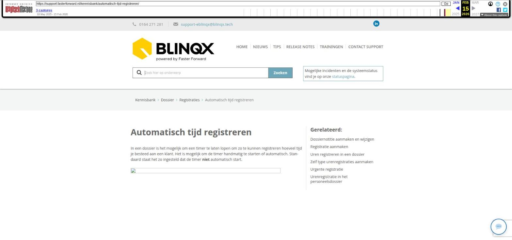

Automatisch tijd registreren

Tekstinhoud
Automatisch tijd registreren
In een dossier is het mogelijk om een timer te laten lopen om zo te kunnen registreren hoeveel tijd je besteed aan een klant. Het is mogelijk om de timer handmatig te starten of automatisch. Standaard staat het zo ingesteld dat de timer niet automatisch start.
Automatisch starten tijdregistratie
Het is mogelijk om de timer direct automatisch te laten starten wanneer je een klantdossier opent. Ook kan het zo ingesteld worden dat de timer pauzeert, wanneer je een ander tabblad opent. Als er gewerkt wordt aan een aanvraag in "dossier 1" (waar de timer loopt) en tussendoor wordt er een telefoongesprek afgehandeld in "dossier 2" (op een ander tabblad in de browser), dan kan het handig zijn dat de timer in "dossier 1" wordt gepauzeerd. Zo wordt de tijd van het telefoongesprek niet op dossier 1, maar op dossier 2 geregistreerd.
Door deze instelling te gebruiken zal de timer van het niet-actieve browservenster automatisch gepauzeerd worden.
Instellen
Wil je gebruik maken van het automatisch starten van de tijdregistratie, volg dan de volgende stappen:
1. Klik het 'poppetje' rechtsboven en klik vervolgens op 'Mijn instellingen';
2. Ga naar het tabblad 'Instellingen' en klik op 'Overige'. Hier stel je onder 'Registraties' je voorkeuren in.
Handmatig timer starten en stoppen
Wanneer je op start klikt, gaat de timer lopen. Terwijl de timer loopt is het mogelijk om in het dossier van tabblad te wisselen en eventueel een nieuw tabblad te openen in jouw browser.
Daarnaast is het mogelijk om de timer op 'pauze' te zetten of te resetten. Wanneer je klaar bent, klik je op het klokicoon. Je komt nu in het registratiescherm waar de tijdregistratie aangemaakt kan worden.
De tijd wordt overgenomen van de timer, dit is op de minuut nauwkeurig. De tijd kan handmatig aangepast worden door te schuiven, in het veld te typen of te klikken op de cijfers onder de schuifbalk.
Let op: staat de instelling "Timer automatisch pauzeren" aan en wordt de timer handmatig gepauzeerd, dan moet deze ook weer handmatig gestart worden. Dit zal niet automatisch gebeuren.
Laatste update: 4 juni 2024
Was deze informatie nuttig?
Ja Nee